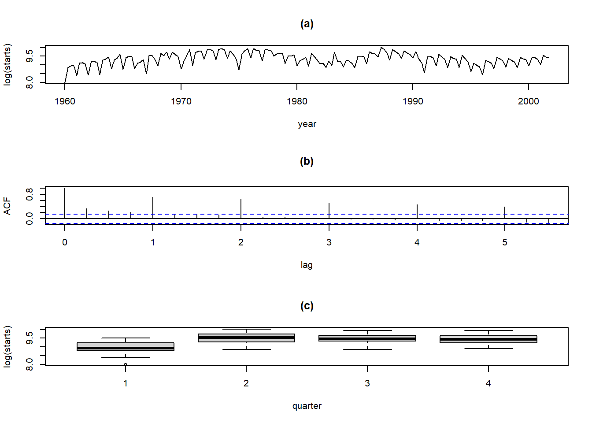

x <-ts(Hstarts[,1], start =1960, # 시계열 시작 날짜frequency =4) # 분기별 시계열로 1년에 4번 관측par(mfrow=c(3,1)) # 3개의 그래프를 한 화면에 출력# 시계열 그림plot(x,xlab ="year", ylab ="log(starts)",type ="l", # 선으로 표시main="(a)")# 자기상관계수 그림acf(x, main ="(b)",xlab ="lag")# 분기별 상자그림quart =rep(1:4, 42) # 분기 boxplot(x ~ quart,xlab ="quarter", ylab ="log(starts)",main ="(c)")

Result! (a) 그래프를 통해 해당 시계열은 계절성이 강하다는 것을 알 수 있다.
(b) 그래프를 통해 4의 배수인 시차에서는 자기상관이 크며, 다른 시차에서는 천천히 0으로 감소한다는 것을 알 수 있다.
(c) 그래프를 통해 해당 시계열의 관측값은 1분기에 가장 낮으며, 2분기에는 높다는 것을 알 수 있다.
par(mfrow=c(3,2)) # 한 행에 2개의 그래프를 출력 -> 총 3개 행으로 6개의 그래프가 출력됨plot(diff(x), # 1번 차분한 시계열 그림xlab ="year",type ="l",main ="(a) nonseasonal differencing")acf(diff(x), # 1번 차분한 시계열의 자기상관계수 그림main ="(b) nonseasonal differencing",xlab ="lag")plot(diff(x, lag =4), # 주기 4만큼 계절 차분한 시계열 그림type ="l",xlab ="year",main ="(c) seasonal differencing")acf(diff(x, lag =4), # 계절 차분한 시계열의 자기상관계수 그림main ="(d) seasonal differencing",xlab ="lag")plot(diff(diff(x, diff =1), lag =4), # 1번 차분한 후 주기 4만큼 계절 차분한 시계열 그림type ="l", xlab ="year",main ="(e) seasonal & nonseasonal differencing")acf(diff(diff(x, diff =1), lag =4), # 1번 차분한 후 주기 4만큼 계절 차분한 시계열의 자기상관계수 그림main ="(f) seasonal & nonseasonal differencing",xlab ="lag")
Caution! 함수 diff()를 이용하여 차분을 수행할 수 있다. \(k\)번 차분 \(\Delta^kY_{t}\)을 수행하고 싶으면 옵션 diff = k를 입력하면 되고, 주기 \(s\)만큼 계절차분 \(\Delta_sY_{t}\)을 수행하고 싶으면 옵션 lag = s를 입력하면 된다. Result! (a)와 (b) 그래프를 통해 1번 차분한 시계열은 계절성을 보이며, 높은 자기상관을 가진다는 것을 알 수 있다.
(c)와 (d) 그래프를 통해 원 시계열에 계절차분을 수행함으로써 계절성이 제거된 것을 알 수 있다.
(e)와 (f) 그래프를 통해 원 시계열에 계절차분과 차분을 동시에 수행함으로써 계절성이 제거되고 시간의 흐름에 따라 평균이 변하지 않는다는 것을 알 수 있다.
Result! 귀무가설 \(H_0 : \rho(1)=\rho(2)=\cdots=\rho(10)=0\)에 대한 검정 결과에 따르면, \(p\)값이 0.4434이므로 유의수준 0.05에서 \(p\)값이 0.05보다 크기 때문에 귀무가설을 기각하지 못한다. 즉, 잔차에 대해 시차 10까지의 자기상관계수 \(\rho(1), \rho(2), \cdots, \rho(10)\) 중 유의한 자기상관계수가 적어도 1개 존재한다는 증거가 부족하며, 해당 시계열에 대해 ARIMA(1,1,1)(1,1,1)[4] 모형을 가정하는 것이 적절하다.
Result! 귀무가설 \(H_0 : \rho(1)=\rho(2)=\cdots=\rho(10)=0\)에 대한 검정 결과에 따르면, \(p\)값이 0.2946이므로 유의수준 0.05에서 \(p\)값이 0.05보다 크기 때문에 귀무가설을 기각하지 못한다. 즉, 잔차에 대해 시차 10까지의 자기상관계수 \(\rho(1), \rho(2), \cdots, \rho(10)\) 중 유의한 자기상관계수가 적어도 1개 존재한다는 증거가 부족하며, 해당 시계열에 대해 ARIMA(1,1,1)(0,1,1)[4] 모형을 가정하는 것이 적절하다.
6.1.2 예측
SARIMA 모형에서 구축한 ARIMA(1,1,1)(0,1,1)[4] 모형과 ARIMA(1,1,1)(0,1,1)[4] 모형은 적절한 것으로 판단되나, 두 번째 모형이 첫 번째 모형보다 모수 개수가 적기 때문에 두 번째 모형이 더 합리적으로 보인다(모형의 간결성). 두 번째 모형을 이용한 예측은 다음 코드를 통해 수행된다.
# 예측pred <-forecast(fit2, h =16) # 미래 16시점까지 예측pred
Result! 해당 시계열은 추세와 계절성을 모두 가지고 있는 비정상시계열임을 알 수 있다.
# 자기상관계수 그림acf(AirPassengers)
Result! 자기상관계수 ACF는 천천히 감소하므로 비정상시계열임을 알 수 있다.
par(mfrow =c(2,1)) # 2개의 그래프를 한 화면에 출력plot(diff(diff(AirPassengers, diff =1), lag =12), # 1번 차분한 후 주기 12만큼 계절 차분한 시계열 그림type ="l")# 자기상관계수 그림acf(diff(diff(AirPassengers, diff =1), lag =12))
Result! 계절차분과 차분을 수행한 AirPassengers 시계열은 정상시계열로 보인다.
Result! 귀무가설 \(H_0 : \rho(1)=\rho(2)=\cdots=\rho(10)=0\)에 대한 검정 결과에 따르면, \(p\)값이 0.106이므로 유의수준 0.05에서 \(p\)값이 0.05보다 크기 때문에 귀무가설을 기각하지 못한다. 즉, 잔차에 대해 시차 10까지의 자기상관계수 \(\rho(1), \rho(2), \cdots, \rho(10)\) 중 유의한 자기상관계수가 적어도 1개 존재한다는 증거가 부족하며, 해당 시계열에 대해 ARIMA(1,1,1)(0,1,1)[12] 모형을 가정하는 것이 적절하다.
6.2.2 예측
# 예측pred <-forecast(fit, h =48) # 미래 48시점까지 예측pred
Point Forecast Lo 80 Hi 80 Lo 95 Hi 95
Jan 1961 449.2223 434.5545 463.8901 426.7899 471.6547
Feb 1961 424.3072 406.7452 441.8691 397.4485 451.1658
Mar 1961 459.0023 438.6160 479.3886 427.8241 490.1805
Apr 1961 497.7220 474.9011 520.5430 462.8204 532.6237
May 1961 509.7462 484.7209 534.7715 471.4733 548.0190
Jun 1961 568.1989 541.1491 595.2488 526.8297 609.5681
Jul 1961 655.7364 626.8032 684.6696 611.4868 699.9859
Aug 1961 641.1725 610.4712 671.8737 594.2190 688.1259
Sep 1961 546.3741 514.0013 578.7470 496.8642 595.8841
Oct 1961 496.7500 462.7878 530.7123 444.8092 548.6908
Nov 1961 427.6964 392.2158 463.1769 373.4335 481.9592
Dec 1961 471.2915 434.3550 508.2281 414.8019 527.7811
Jan 1962 484.9196 441.0846 528.7546 417.8797 551.9595
Feb 1962 458.8334 411.0374 506.6295 385.7356 531.9312
Mar 1962 487.3741 435.6837 539.0644 408.3205 566.4277
Apr 1962 529.1175 473.8375 584.3975 444.5741 613.6609
May 1962 540.1970 481.5427 598.8514 450.4929 629.9012
Jun 1962 602.8458 541.0014 664.6902 508.2629 697.4286
Jul 1962 689.8873 625.0095 754.7651 590.6652 789.1094
Aug 1962 673.9982 606.2226 741.7738 570.3443 777.6521
Sep 1962 576.2455 505.6910 646.8000 468.3417 684.1493
Oct 1962 529.0428 455.8148 602.2708 417.0502 641.0354
Nov 1962 458.1931 382.3859 534.0004 342.2559 574.1303
Dec 1962 500.3163 422.0147 578.6180 380.5643 620.0683
Jan 1963 517.2610 431.8276 602.6945 386.6018 647.9203
Feb 1963 492.2555 401.9707 582.5402 354.1768 630.3341
Mar 1963 526.4753 431.3724 621.5782 381.0279 671.9226
Apr 1963 565.4285 465.7688 665.0883 413.0121 717.8450
May 1963 577.3797 473.3587 681.4007 418.2933 736.4661
Jun 1963 636.1565 527.9505 744.3626 470.6696 801.6435
Jul 1963 723.6557 611.4204 835.8910 552.0066 895.3047
Aug 1963 708.9894 592.8647 825.1142 531.3919 886.5869
Sep 1963 613.9629 494.0748 733.8511 430.6099 797.3160
Oct 1963 564.5258 440.9889 688.0627 375.5924 753.4592
Nov 1963 495.3334 368.2525 622.4144 300.9799 689.6870
Dec 1963 538.8149 408.2861 669.3437 339.1883 738.4415
Jan 1964 552.6991 415.1965 690.2018 342.4069 762.9914
Feb 1964 526.6965 383.8656 669.5273 308.2555 745.1374
Mar 1964 555.6757 407.5409 703.8105 329.1231 782.2284
Apr 1964 597.2036 443.9709 750.4363 362.8545 831.5528
May 1964 608.3505 450.1811 766.5198 366.4513 850.2496
Jun 1964 670.7002 507.7441 833.6563 421.4803 919.9201
Jul 1964 757.7771 590.1707 925.3834 501.4453 1014.1088
Aug 1964 741.9824 569.8515 914.1133 478.7309 1005.2339
Sep 1964 644.4402 467.9006 820.9798 374.4462 914.4342
Oct 1964 597.0650 416.2242 777.9058 320.4928 873.6371
Nov 1964 526.3433 341.3012 711.3854 243.3459 809.3408
Dec 1964 568.5714 379.4213 757.7215 279.2913 857.8515